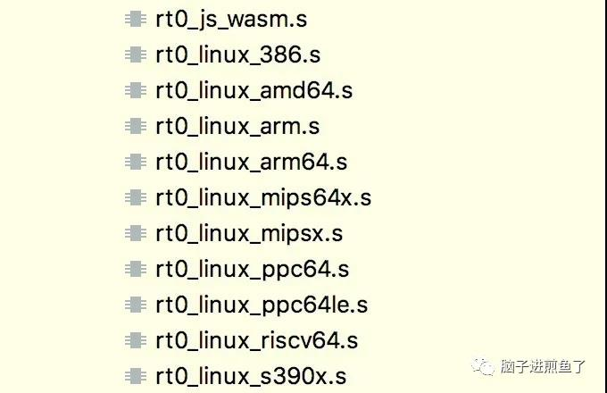
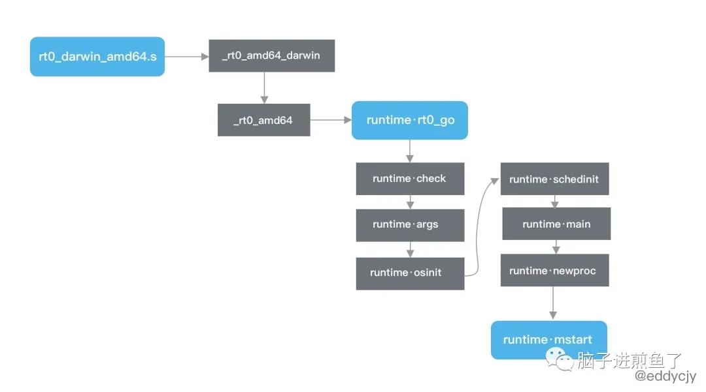

详解 Go 程序的启动流程，你知道 g0，m0 是什么吗？
原创 陈煎鱼 脑子进煎鱼了;) 5天前
收录于话题
#Go45
#面试题13
大家好，我是煎鱼。
自古应用程序均从 Hello World 开始，你我所写的 Go 语言亦然：
1 | import "fmt" |
这段程序的输出结果为 hello world.，就是这么的简单又直接。但这时候又不禁思考了起来，这个 hello world. 是怎么输出来，经历了什么过程。
真是非常的好奇，今天我们就一起来探一探 Go 程序的启动流程。其中涉及到 Go Runtime 的调度器启动，g0，m0 又是什么？
车门焊死，正式开始吸鱼之路。
Go 引导阶段
查找入口
首先编译上文提到的示例程序：
1 | $ GOFLAGS="-ldflags=-compressdwarf=false" go build |
在命令中指定了 GOFLAGS 参数，这是因为在 Go1.11 起，为了减少二进制文件大小，调试信息会被压缩。导致在 MacOS 上使用 gdb 时无法理解压缩的 DWARF 的含义是什么（而我恰恰就是用的 MacOS）。
因此需要在本次调试中将其关闭，再使用 gdb 进行调试，以此达到观察的目的：
1 | $ gdb awesomeProject |
通过 Entry point 的调试，可看到真正的程序入口在 runtime 包中，不同的计算机架构指向不同。例如：
- MacOS 在
src/runtime/rt0_darwin_amd64.s。 - Linux 在
src/runtime/rt0_linux_amd64.s。
其最终指向了 rt0_darwin_amd64.s 文件，这个文件名称非常的直观：
1 | Breakpoint 1 at 0x1063c80: file /usr/local/Cellar/go/1.15/libexec/src/runtime/rt0_darwin_amd64.s, line 8. |
rt0 代表 runtime0 的缩写，指代运行时的创世，超级奶爸：
- darwin 代表目标操作系统（GOOS）。
- amd64 代表目标操作系统架构（GOHOSTARCH）。
同时 Go 语言还支持更多的目标系统架构，例如：AMD64、AMR、MIPS、WASM 等：

源码目录若有兴趣可到 src/runtime 目录下进一步查看，这里就不一一介绍了。
入口方法
在 rt0_linux_amd64.s 文件中，可发现 _rt0_amd64_darwin JMP 跳转到了 _rt0_amd64 方法：
1 | TEXT _rt0_amd64_darwin(SB),NOSPLIT,$-8 |
紧接着又跳转到 runtime·rt0_go 方法：
1 | TEXT _rt0_amd64(SB),NOSPLIT,$-8 |
该方法将程序输入的 argc 和 argv 从内存移动到寄存器中。
栈指针（SP）的前两个值分别是 argc 和 argv，其对应参数的数量和具体各参数的值。
开启主线
程序参数准备就绪后，正式初始化的方法落在 runtime·rt0_go 方法中：
1 | TEXT runtime·rt0_go(SB),NOSPLIT,$0 |
- runtime.check：运行时类型检查，主要是校验编译器的翻译工作是否正确，是否有 “坑”。基本代码均为检查
int8在unsafe.Sizeof方法下是否等于 1 这类动作。 - runtime.args：系统参数传递，主要是将系统参数转换传递给程序使用。
- runtime.osinit：系统基本参数设置，主要是获取 CPU 核心数和内存物理页大小。
- runtime.schedinit：进行各种运行时组件的初始化，包含调度器、内存分配器、堆、栈、GC 等一大堆初始化工作。会进行 p 的初始化，并将 m0 和某一个 p 进行绑定。
- runtime.main：主要工作是运行 main goroutine，虽然在
runtime·rt0_go中指向的是$runtime·mainPC，但实质指向的是runtime.main。 - runtime.newproc：创建一个新的 goroutine，且绑定
runtime.main方法（也就是应用程序中的入口 main 方法）。并将其放入 m0 绑定的p的本地队列中去，以便后续调度。 - runtime.mstart：启动 m，调度器开始进行循环调度。
在 runtime·rt0_go 方法中，其主要是完成各类运行时的检查，系统参数设置和获取，并进行大量的 Go 基础组件初始化。
初始化完毕后进行主协程（main goroutine）的运行，并放入等待队列（GMP 模型），最后调度器开始进行循环调度。
小结
根据上述源码剖析，可以得出如下 Go 应用程序引导的流程图：

Go 程序引导过程在 Go 语言中，实际的运行入口并不是用户日常所写的 main func，更不是 runtime.main 方法，而是从 rt0_*_amd64.s 开始，最终再一路 JMP 到 runtime·rt0_go 里去，再在该方法里完成一系列 Go 自身所需要完成的绝大部分初始化动作。
其中整体包括：
- 运行时类型检查、系统参数传递、CPU 核数获取及设置、运行时组件的初始化（调度器、内存分配器、堆、栈、GC 等）。
- 运行 main goroutine。
- 运行相应的 GMP 等大量缺省行为。
- 涉及到调度器相关的大量知识。
后续将会继续剖析将进一步剖析 runtime·rt0_go 里的爱与恨，尤其像是 runtime.main、runtime.schedinit 等调度方法，都有非常大的学习价值，有兴趣的小伙伴可以持续关注。
Go 调度器初始化
知道了 Go 程序是怎么引导起来的之后，我们需要了解 Go Runtime 中调度器是怎么流转的。
runtime.mstart
这里主要关注 runtime.mstart 方法：
1 | func mstart() { |
- 调用
getg方法获取 GMP 模型中的 g，此处获取的是 g0。 - 通过检查 g 的执行栈
_g_.stack的边界（堆栈的边界正好是 lo, hi）来确定是否为系统栈。若是，则根据系统栈初始化 g 执行栈的边界。 - 调用
mstart1方法启动系统线程 m，进行调度器循环调度。 - 调用
mexit方法退出系统线程 m。
runtime.mstart1
这么看来其实质逻辑在 mstart1 方法，我们继续往下剖析：
1 | func mstart1() { |
- 调用
getg方法获取 g。并且通过前面绑定的_g_.m.g0判断所获取的 g 是否 g0。若不是，则直接抛出致命错误。因为调度器仅在 g0 上运行。 - 调用
minit方法初始化 m，并记录调用方的 PC、SP，便于后续 schedule 阶段时的复用。 - 若确定当前的 g 所绑定的 m 是 m0，则调用
mstartm0方法，设置信号 handler。该动作必须在minit方法之后，这样minit方法可以提前准备好线程，以便能够处理信号。 - 若当前 g 所绑定的 m 有启动函数，则运行。否则跳过。
- 若当前 g 所绑定的 m 不是 m0，则需要调用
acquirep方法获取并绑定 p，也就是 m 与 p 绑定。 - 调用
schedule方法进行正式调度。
忙活了一大圈，终于进入到开题的主菜了，原来潜伏的很深的 schedule 方法才是真正做调度的方法，其他都是前置处理和准备数据。
由于篇幅问题，schedule 方法会放到下篇再继续剖析，我们先聚焦本篇的一些细节点。
问题深剖
不过到这里篇幅也已经比较长了，积累了不少问题。我们针对在 Runtime 中出镜率最高的两个元素进行剖析：
m0是什么，作用是？g0是什么，作用是？
m0
m0 是 Go Runtime 所创建的第一个系统线程，一个 Go 进程只有一个 m0，也叫主线程。
从多个方面来看：
- 数据结构：m0 和其他创建的 m 没有任何区别。
- 创建过程：m0 是进程在启动时应该汇编直接复制给 m0 的，其他后续的 m 则都是 Go Runtime 内自行创建的。
- 变量声明：m0 和常规 m 一样，m0 的定义就是
var m0 m，没什么特别之处。
g0
g 一般分为三种，分别是：
- 执行用户任务的叫做 g。
- 执行
runtime.main的 main goroutine。 - 执行调度任务的叫 g0。。
g0 比较特殊，每一个 m 都只有一个 g0（仅此只有一个 g0），且每个 m 都只会绑定一个 g0。在 g0 的赋值上也是通过汇编赋值的，其余后续所创建的都是常规的 g。
从多个方面来看：
- 数据结构：g0 和其他创建的 g 在数据结构上是一样的，但是存在栈的差别。在 g0 上的栈分配的是系统栈，在 Linux 上栈大小默认固定 8MB，不能扩缩容。而常规的 g 起始只有 2KB，可扩容。
- 运行状态：g0 和常规的 g 不一样，没有那么多种运行状态，也不会被调度程序抢占，调度本身就是在 g0 上运行的。
- 变量声明：g0 和常规 g，g0 的定义就是
var g0 g，没什么特别之处。
小结
在本章节中我们讲解了 Go 调度器初始化的一个过程，分别涉及：
- runtime.mstart。
- runtime.mstart1。
基于此也了解到了在调度器初始化过程中，需要准备什么，初始化什么。另外针对调度过程中最常提到的 m0、g0 的概念我们进行了梳理和说明。
总结
在今天这篇文章中，我们详细的介绍了 Go 语言的引导启动过程中的所有流程和初始化动作。
同时针对调度器的初始化进行了初步分析，详细介绍了 m0、g0 的用途和区别。在下一篇文章中我们将进一步对真正调度的 schedule 方法进行详解，这块也是个硬骨头了。